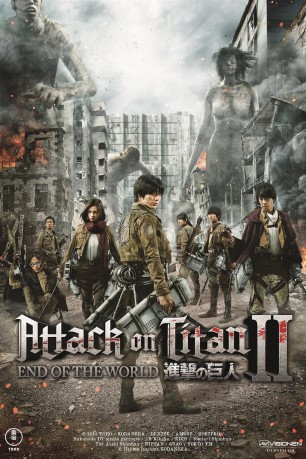

#11325 Attack on Titan Part II - End of the World
 
 IMDB-Wertung: 4.8 / 10
IMDB-Wertung: 4.8 / 10  Metascore: 0
Metascore: 0 
Angesiedelt in einer Welt, in der gigantische Ungeheuer die Menschheit bedrohen, erzählt Attack on Titan die Geschichte eines Jungens namens Eren Jäger. Dieser lebt gemeinsam mit seiner Adoptivschwester Mikasa Ackerman und deren Freund Armin Alert in einer Stadt, die von riesigen Mauern umgeben ist. Hier hat sich der Rest der Menschheit verschanzt, um ein letztes Bollwerk gegen die übermächtigen Titanen zu errichten, die ohne Rücksicht auf Verluste auf dem Erdball ihr Unwesen treiben.
Jahr: 2015
Dauer: 87 Minuten
FSK: 16
Land: Japan Studio: Eye See MoviesTonspuren:
Untertitel: Deutsch,
Auflösung: 1080p (1920x804) Größe: 4618 MB
Genre: Action, Horror, Drama, Sci-Fi, Fantasy
Regisseur: Shinji Higuchi
Drehbuch: Hajime Isayama, Tomohiro Machiyama, Yûsuke Watanabe
Soundtrack: Shiro Sagisu, Shiro Washizu
Darsteller:
Datei: X:\HD-Eastern-Collections\Attack on Titan\Attack on Titan Part II - End of the World (2015, FSK16, 1920x804).mkv seit 19.06.2019
Festplatte: HD Eastern+Western
 Alle Filme aus Gruppe 'HD-Eastern-Collections\Attack on Titan'
Alle Filme aus Gruppe 'HD-Eastern-Collections\Attack on Titan'